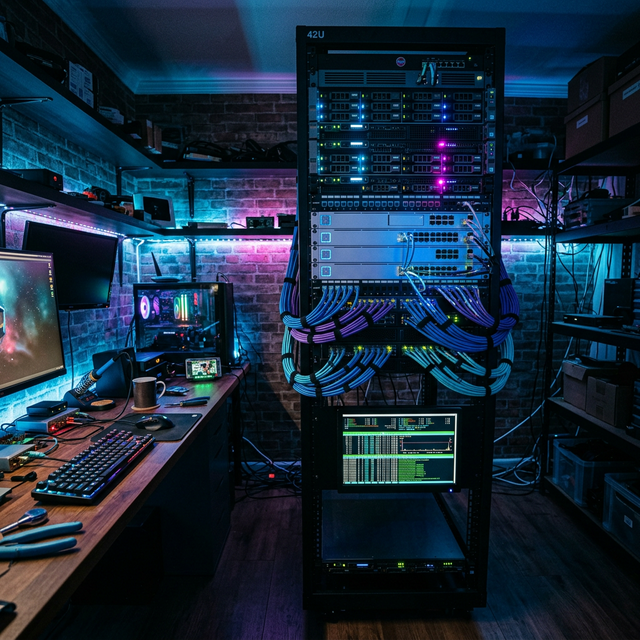
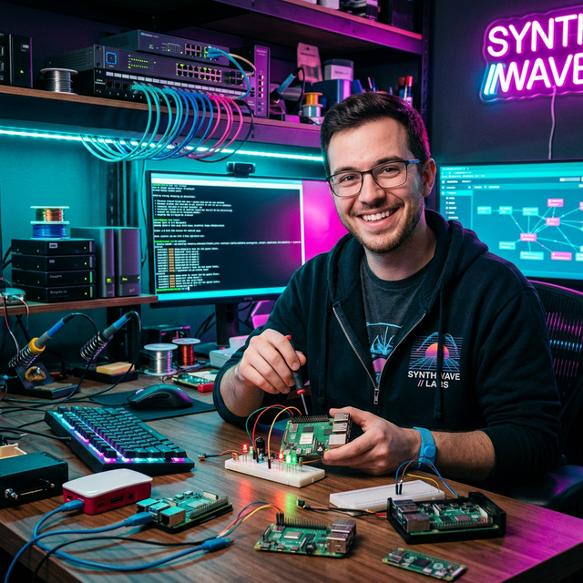
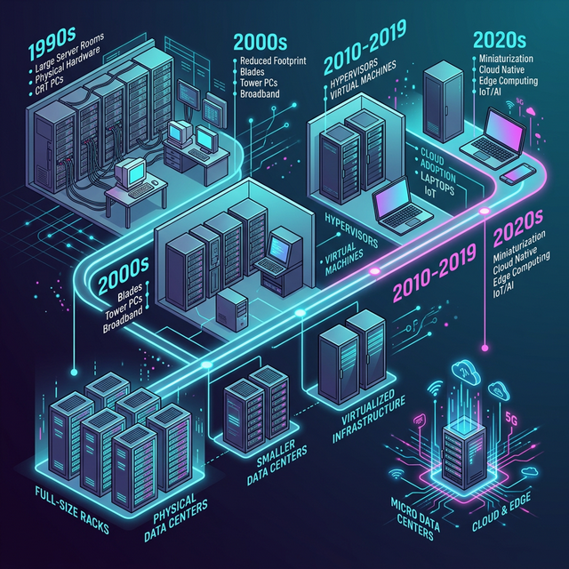
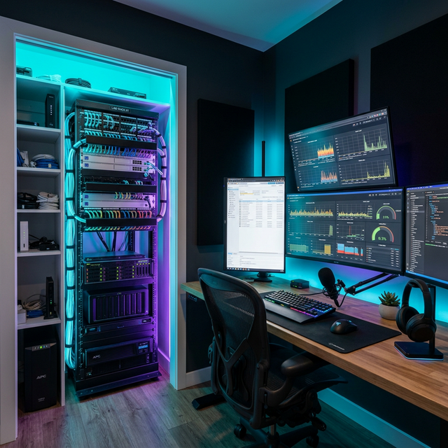
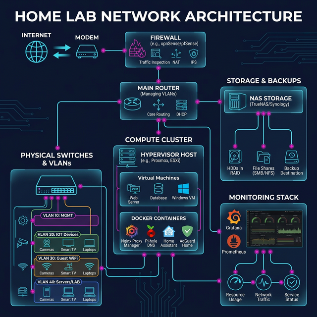
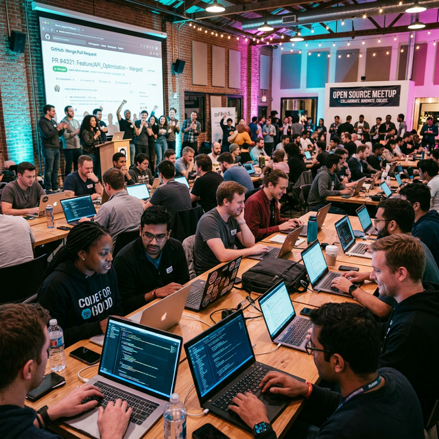

What Is Home Labbing?
Home labbing is the hobby of setting up your own servers and networking gear at home. It’s a way to take control of your data and learn IT skills without needing a professional server room.
My setup runs simple but useful tools, things like personal cloud storage, home automation, and network security. If there’s a service I use daily, I try to see if I can host it myself first.
It’s mostly a "learn by doing" project. It’s about the satisfaction of building something from scratch, troubleshooting the weird bugs that pop up, and finally getting everything to work correctly.
Self-Hosting
Run your own email, cloud storage, password manager, and more — no third-party lock-in.
Security Research
Spin up honeypots, IDS/IPS systems, and VPN tunnels to understand threats hands-on.
Experimentation
Test bleeding-edge software, new Linux distros, and container orchestration without risk to production.

AI Prompt: "A wide-angle photograph of a home server lab setup in a dimly lit room. Multiple rack-mounted servers with glowing blue and cyan LED lights, organized ethernet cables, network switches, and a small monitor displaying a terminal dashboard. Cyberpunk-inspired cool blue and magenta ambient lighting. High quality, editorial photography style."
Who Are Home Labbers?
The home lab community is a mix of students, IT professionals, and hobbyists. Whether someone is learning for a future career or just tinkering as a nighttime project, everyone is just trying to figure out how technology works under the hood.
It’s a very helpful group. Communities like r/homelab have over a million members who share configurations and help each other troubleshoot technical issues at all hours of the night.
At the end of the day, we’re the kind of people who see an old piece of office hardware at a thrift store or e-waste bin and think about how we could repurpose it for something cool at home.
Community Skill Spectrum
| Level | Typical Setup | Favorite Tool |
|---|---|---|
| Beginner | Raspberry Pi, old laptop | Pi-hole, Portainer |
| Intermediate | Mini PC cluster, managed switch | Proxmox, Ansible |
| Advanced | Full rack, 10GbE, redundant storage | Kubernetes, Terraform |
| Architect | Multi-site, BGP peering, own ASN | Custom tooling, eBPF |
The Cable Management Obsession
Ask any home labber what they're most proud of, and chances are it's their cable management. Custom-length patch cables, Velcro wraps, labeled runs, it's part engineering, part art, and entirely satisfying.

AI Prompt: "Portrait-style photo of an enthusiastic tech hobbyist sitting at a desk surrounded by Raspberry Pi boards, hard drives, and networking equipment. Warm neon lighting from monitors in the background. Cyberpunk-inspired color palette with cyan and magenta tones. Editorial photography."
When Did Home Labbing Start?
Home labbing has roots stretching back to the early days of personal computing. In the 1990s, enthusiasts ran mail servers on ISDN lines and compiled Linux kernels from tarballs downloaded overnight. The movement was niche, expensive, and gloriously chaotic.
The 2010s brought a revolution: cheap single-board computers like the Raspberry Pi, the rise of Docker and container technology, and an explosion of free, open-source software that turned a $35 credit-card-sized computer into a legitimate server. Suddenly, everyone could have a lab.
Today, we live in the golden age. Off-lease enterprise hardware is dirt cheap, virtualization is mature, and infrastructure-as-code means you can version-control your entire lab setup in Git.
A Brief Timeline
- 1990s — Early adopters run LAMP stacks on repurposed desktops. FTP servers and IRC bots abound.
- 2000s — VMware Workstation and VirtualBox enable multi-OS experimentation on a single machine.
- 2012 — Raspberry Pi launches; the barrier to entry drops to the cost of a pizza.
- 2013–2015 — Docker explodes; home labs become containerized micro-datacenters.
- 2017–2020 — Kubernetes at home becomes real with K3s; GitOps enters the hobbyist lexicon.
- 2021–Present — Proxmox, TrueNAS, and Tailscale make enterprise-grade setups trivially accessible.
The Off-Lease Gold Rush
One of the biggest catalysts was the flood of decommissioned enterprise hardware hitting the secondary market. Dell PowerEdge R720s, HP ProLiant DL380s, machines that once cost $15,000+ now sell for under $200. This democratized serious computing power for hobbyists worldwide.

AI Prompt: "An isometric illustration of a timeline showing the evolution of home computing and server technology from the 1990s to 2020s. Each era shows miniaturized server rooms getting progressively smaller and more powerful. Dark background with neon cyan and magenta accent colors, clean vector art style."
Where Do We Lab?
Anywhere with power and an ethernet drop, or even just Wi-Fi. The classic home lab lives in a spare bedroom closet, a garage shelf, or a purpose-built network rack tucked under the stairs. Some of us have dedicated rooms; others run the entire operation from a single NUC on the desk.
Location matters because of heat, noise, and power. A full 42U rack with dual Xeon servers can sound like a jet engine and heat a room by 10°F. Smart labbers plan for ventilation, power distribution, and UPS backup from day one.
Increasingly, home labs extend into the cloud. Hybrid setups connect on-premises hardware to cloud VMs via WireGuard or Tailscale tunnels, giving labbers the best of both worlds: local performance and cloud reach.
Common Lab Locations
| Location | Pros | Cons |
|---|---|---|
| Spare Closet | Out of sight, contained | Poor ventilation, limited space |
| Garage / Basement | Space, noise isolation | Temperature extremes, dust |
| Desktop Mini-Lab | Quiet, energy-efficient | Limited expansion |
| Hybrid (On-Prem + Cloud) | Flexibility, redundancy | Monthly cloud costs |
Open Source Champions
Many home labbers are also prolific open-source contributors. We package our Ansible playbooks, Docker Compose stacks, and Terraform modules for the community. If we solved a problem, we want you to never have to fight the same battle.

AI Prompt: "A beautifully organized home office and server closet with a network rack, cable management, UPS backup, and a desk with multiple monitors showing Grafana dashboards and Proxmox virtual machines. Neon ambient lighting with cyan and purple tones. High-quality interior photography."
How Is It All Built?
A modern home lab is built in layers, much like a production environment. At the base is the physical infrastructure, servers, switches, and storage. On top of that sits the hypervisor (Proxmox, ESXi, or even just KVM), which carves the hardware into virtual machines and containers.
Configuration management tools like Ansible and Terraform ensure that every VM, container, and network rule is defined as code, versioned in Git, and reproducible. If the lab burns down tomorrow, we can rebuild it from a repo.
Monitoring is non-negotiable. A typical stack includes Prometheus for metrics collection, Grafana for dashboards, Loki for log aggregation, and Uptime Kuma for service health checks. If something goes down at 3 AM, we know about it before the coffee is brewed.
The Typical Stack
Hypervisor
Proxmox VE, ESXi, or XCP-ng, the foundation that makes everything else possible.
Containers
Docker, Podman, and K3s for lightweight, reproducible service deployments.
Monitoring
Prometheus + Grafana + Loki for complete observability across every layer.
Networking
OPNsense or pfSense firewall, VLANs, WireGuard VPN, and Pi-hole DNS filtering.
Storage
TrueNAS with ZFS, mirrored pools, snapshots, and replication for data safety.
Automation
Ansible playbooks and Terraform modules, all tracked in Git for full reproducibility.

AI Prompt: "A detailed infographic-style illustration showing the architecture of a home lab network: firewall, router, switches, VLANs, NAS storage, hypervisor, Docker containers, and a monitoring stack. Dark navy background with glowing cyan connection lines and magenta accent nodes. Clean, modern technical diagram style."
Why Do We Do This?
Because learning by reading documentation is one thing, but learning by destroying your DNS at 2 AM and having to fix it is another level entirely. Home labbing provides a safe sandbox where mistakes are cheap and the lessons are permanent.
Every certification we study for, CCNA, CKA, AWS Solutions Architect, becomes tangible when we can lab it out on real hardware. Theory becomes muscle memory. Diagrams become running systems.
And then there's the open-source angle. We believe that knowledge should be free and tools should be accessible. When we build something useful, a monitoring template, a backup script, a network diagram generator, we publish it. We write the README. We answer the issues. We build in the open.
The Core Motivations
- Career Acceleration — Hands-on experience with production-grade tools makes interviews and on-the-job work dramatically easier.
- Digital Sovereignty — We own our data. Our email, our files, our passwords, no third-party has the keys.
- Community Impact — Every open-source contribution, blog post, and forum answer makes the next person's journey smoother.
- Pure Joy — There is a deep, incomparable satisfaction in watching green LEDs blink in sync on a cluster you built from scratch.
Open Source: The Ethos
We don't just use open-source software, we live by open-source principles. Transparency, collaboration, and giving back are baked into the culture. Our dotfiles are public. Our Ansible roles are on GitHub. Our blog posts include the mistakes, not just the victories.

AI Prompt: "An inspiring wide shot of an open-source community meetup, with laptops open showing GitHub repositories and code. A large screen in the background displays a pull request being merged. Warm atmosphere with ambient cyan and magenta lighting. Documentary photography style, diverse group of developers collaborating."